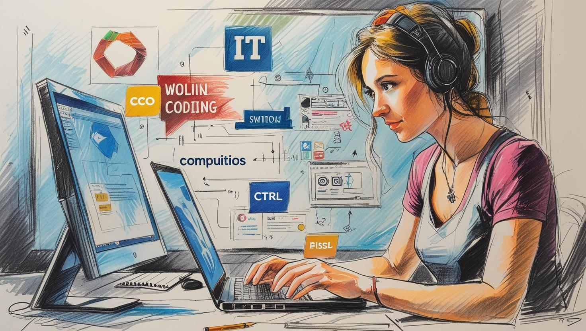
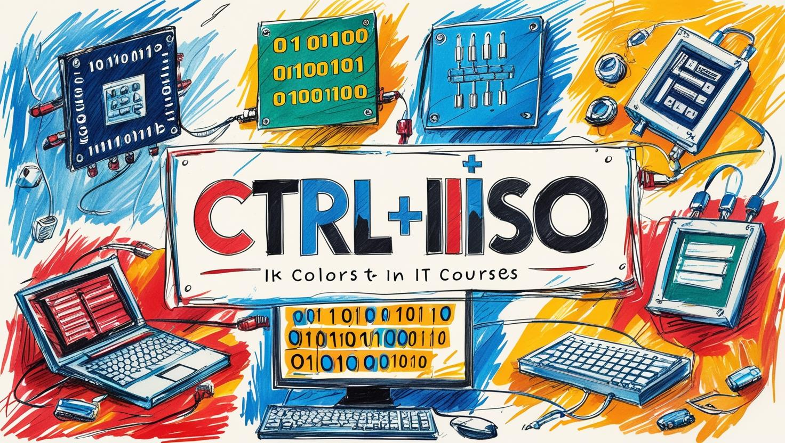
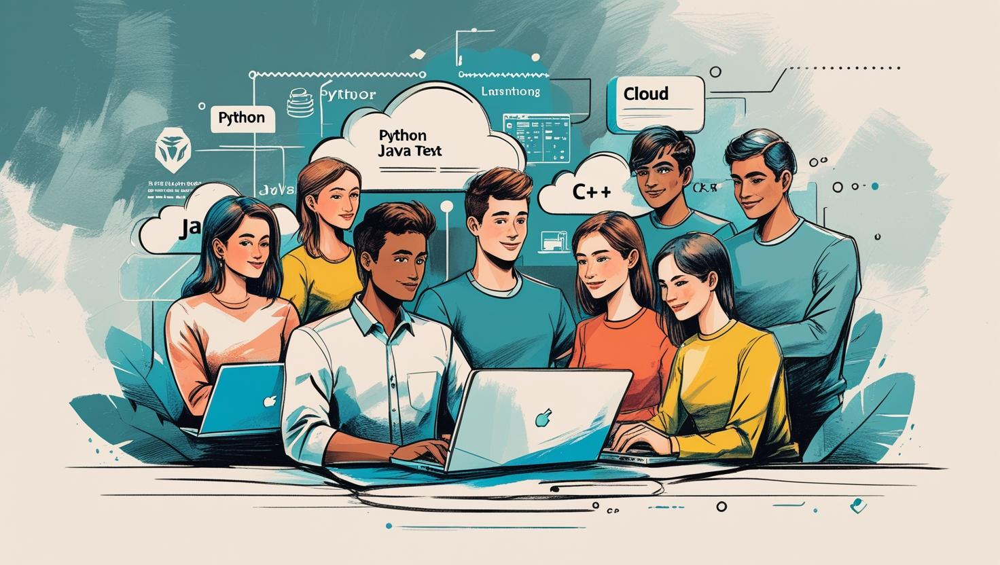

At Ctrl+IIISO, we make IT education accessible, practical, and
empowering — helping you learn anywhere, anytime.

At Ctrl+IIISO, we believe technology should be more than something you use—
it should be something you master.Our name reflects this vision: “Ctrl” represents control, shortcuts, and efficiency, while “IIISO” is our unique identity, symbolizing innovation, creativity, and forward-thinking.
Together, Ctrl+IIISO becomes more than just a name—it’s a promise: a shortcut to unlocking your full IT potential.
We are driven by the belief that knowledge in technology should be accessible, practical, and empowering for everyone, whether you’re a curious beginner or an experienced professional. Our platform exists to guide you through the fast-changing digital world with clarity, confidence, and hands-on learning.
What sets us apart is not only our commitment to teaching IT, but also our passion for building a community of thinkers, creators, and problem-solvers. We don’t just want you to learn how technology works—we want you to understand how to use it to transform ideas into real-world solutions.
Our mission is simple, yet powerful: to empower learners with practical, industry-relevant IT knowledge that goes beyond theory and can be confidently applied in real-world settings. We believe education should not only teach concepts but also equip learners with hands-on skills that prepare them for today’s challenges and tomorrow’s innovations.
By bridging the gap between learning and application, we aim to transform curiosity into competence, and competence into career growth.
We envision a future where technology is no longer a barrier, but a bridge—a tool that empowers everyone, regardless of their background, experience level, or location. In this future, learners can confidently navigate the digital world, adapt to its rapid changes, and unlock new opportunities for both personal and professional growth.
At Ctrl+IIISO, our vision extends beyond just teaching IT; we aspire to build a generation of innovators, problem-solvers, and leaders who will shape the future of the digital landscape. We see a world where access to IT education is inclusive, engaging, and transformative, creating pathways that uplift individuals, strengthen communities, and drive progress across industries.

What makes Ctrl+IIISO stand out is our unwavering commitment to clarity, simplicity, and practicality. In a world where technology can often feel overwhelming, we break it down into easy-to-understand, actionable knowledge that learners can immediately put into practice.
Instead of relying on dense theory and outdated methods, our resources are designed to be hands-on, engaging, and aligned with the latest industry trends.
At Ctrl+IIISO, you’ll benefit from:
1. Expert-led content created and reviewed by professionals who understand the industry.
2. Learner-first design, ensuring lessons are accessible, inclusive, and tailored to diverse learning styles.
3. Practical applications that connect directly to workplace demands, helping you build career-ready skills.
4. Future-focused insights, keeping you ahead in an ever-evolving digital landscape.
With Ctrl+IIISO, you’re not just learning IT—you’re building the confidence, adaptability, and knowledge to thrive in the digital age.

Behind Ctrl+IIISO is a collaborative team of IT professionals, educators, and innovators united by one vision: to break down barriers to tech education and make IT learning accessible to everyone.Each member of our team brings unique expertise—ranging from software development, data science, and cloud computing to digital design, teaching, and mentoring.
This diversity ensures that our learners benefit not only from technical depth, but also from practical, real-world perspectives that bridge the gap between knowledge and application.
What truly defines our team is our shared passion for education and innovation. We are driven by the belief that learning should be engaging, inclusive, and empowering. By combining our technical skills with our commitment to teaching, we strive to create an environment where learners feel supported, challenged, and inspired to grow.
Together, we are more than instructors—we are mentors, guides, and lifelong learners ourselves. At Ctrl+IIISO, we learn alongside our community, constantly adapting to the latest technologies to ensure we’re always delivering up-to-date, relevant, and impactful education.